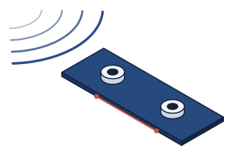
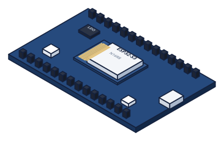

Análisis de Sistemas y Señales Digitales · Mediciones en placa
Para la implementación en hardware de un asistente de IA para odontólogos


I. Beamforming de array endfire de micrófonos MEMS
II. Detección de palabra de activación en microcontrolador
Dante Barili
Juan Förster
Mauricio Garavani
Bautista Mijalovich
Noviembre 2026

01
Beamforming
El beamformer corriendo en la placa: el desfase entre canales que apareció al medir, cómo se compensa y cuánto atenúa según dónde está el parlante.


02
Wake word
La red corriendo en el ESP32-S3: lo que cuesta cada 30 ms y cómo detecta en el consultorio según la distancia, con y sin beamformer.
¿Preguntas?
Gracias. Código y mediciones del proyecto Órbita: firmware ESP-IDF, simulaciones en Python y entrenamiento del modelo.